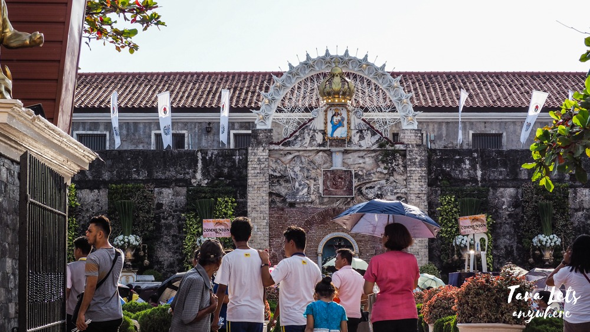
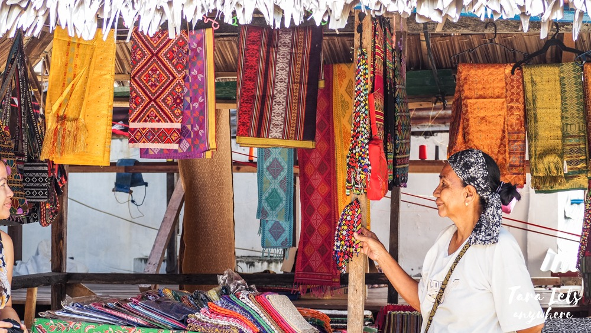
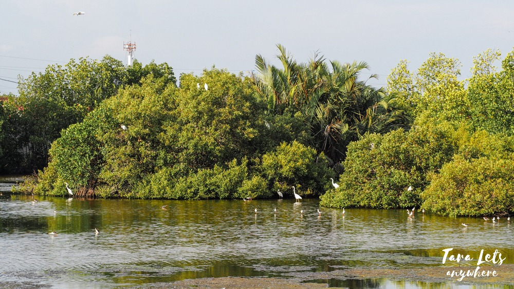
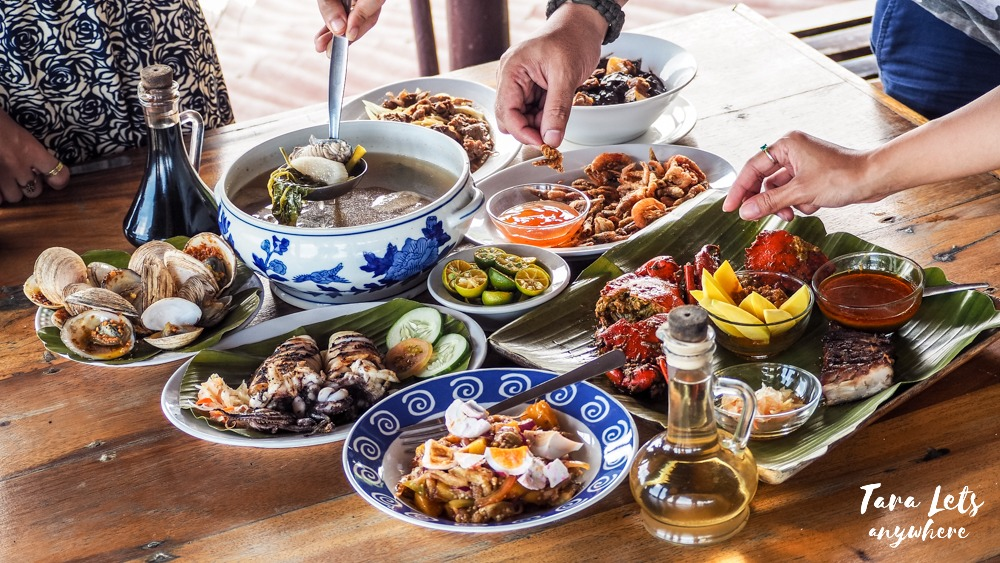
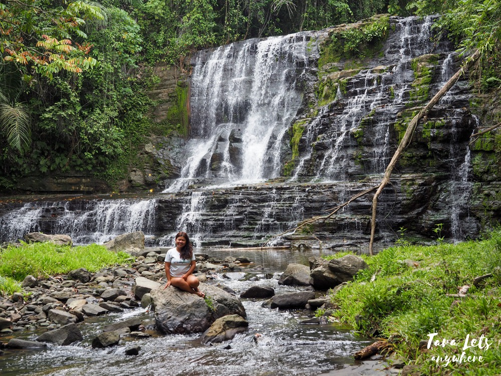
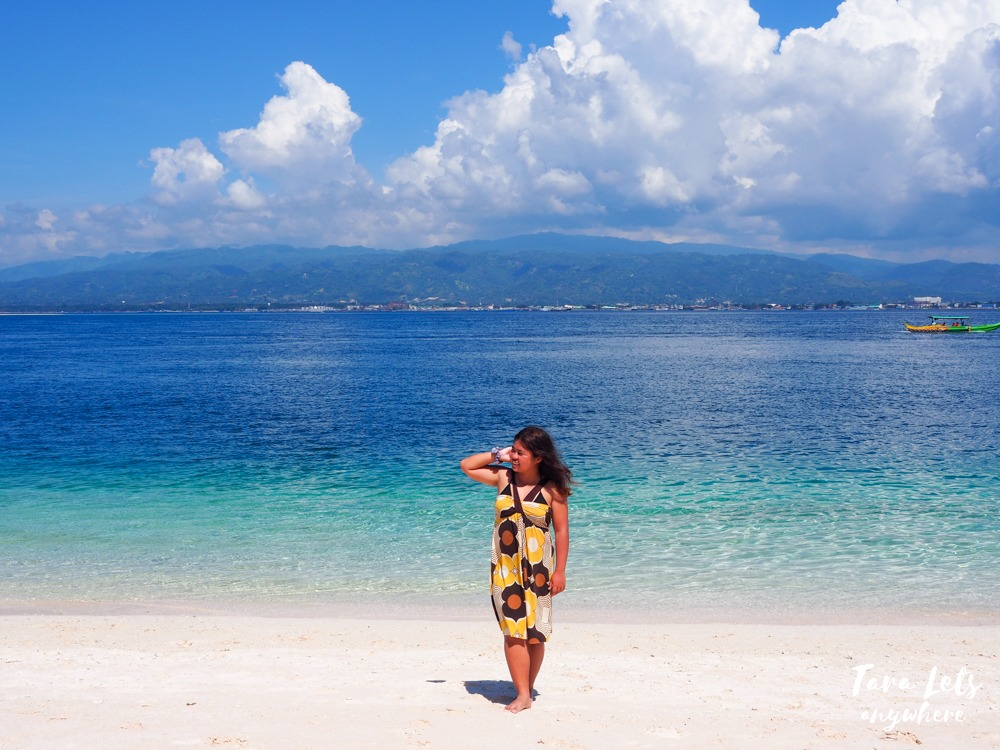
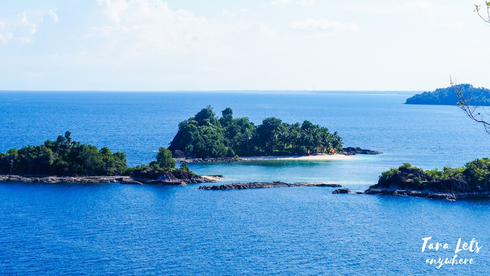
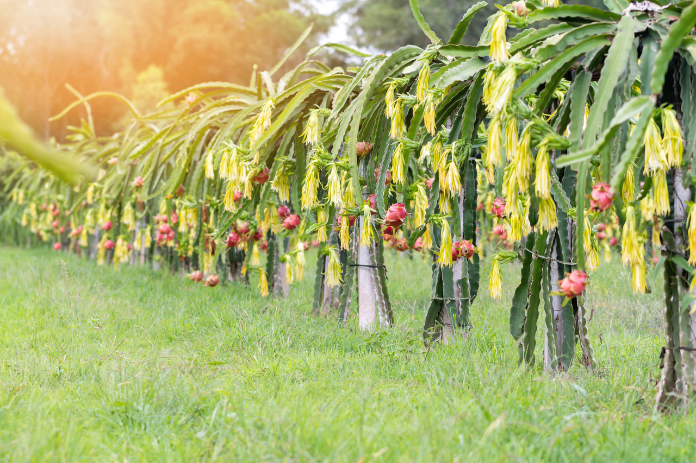
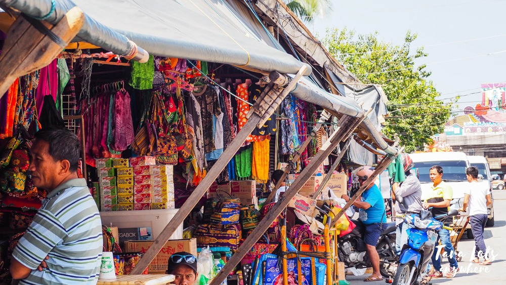
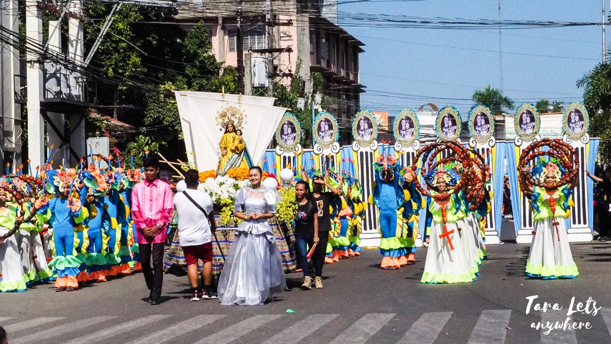

Zamboanga Itinerary:
Ultimate Travel Guide
Try to visit Zamboanga City and it may become your favorite city in Mindanao, too! This beautiful & culture-rich city goes by many names, including “Asia’s Latin City”, the “Sardines Capital of the Philippines” and as per myself the most colorful city I’d been to in the Philippines. Here are the top things to do when you’re in Zamboanga City!


Try to visit Zamboanga City and it may become your favorite city in Mindanao, too! This beautiful & culture-rich city goes by many names, including “Asia’s Latin City”, the “Sardines Capital of the Philippines” and as per myself the most colorful city I’d been to in the Philippines. Here are the top things to do when you’re in Zamboanga City!
Traveling – it leaves you speechless,
then turns you into a storyteller
- Go on a city tour
- Visit the Yakan Weaving Village
- Bird watching
- Food tripping
- Take a dip in Merloquet Falls
- Swim in the Pink Beach
- Island hop in Once Islas
- Go on a farm tour
- Buy your pasalubongs in the
Barter Trade - Witness the Zamboanga
Hermosa Festival
Due to its history as a main stronghold of the Spanish force during the colonial era and its diverse population (a mix of Samal, Yakan, Tausug and Badjao people), Zamboanga boasts a rich culture to explore. And what better way to do that than to go on a city tour?

It is possible to do a walking tour from the Fort Pilar Shrine to the City Hall to Plaza Pershing. You can do this DIY or with a local tour agency, where you can get a local guide to show you around. Your guide will give not only historical info but also insights on the actual life of Zamboangenos (and how it differs from what you know in the media) and even point out landmarks you might miss on your own.
The Yakan Weaving Village is a must-see in Zamboanga City. As its name implies, it’s a small village composed of several commercial stalls where you can see and buy traditional woven products by the Yakan, such as cloths, bags, purses, hats and accessories. The fabrics in these products have various colors and bold geometric designs. You can also witness a live demonstration of traditional weaving.
For a bit of background, the Yakans are a Filipino tribe native to Basilan. They have a tradition of weaving dresses (called semmek) using plant fibers such as abaca and pineapple. Nowadays, they have expanded their craft to include other products to be sold to locals & tourists in Zamboanga City.

Honestly, the products here are a great buy considering the labor & quality of the woven fabrics. I’m surprised a lot of the cloths don’t go by the thousands. My favorite buys here are a pair of woven earrings and wallets.
Zamboanga City is one of the best places in the country to observe bird life. All in all, you can find over 180 species of endemic and migratory birds here.
Pasonanca Watershed is the home of endemic species such as Zamboanga Bulbul, White-eared Tailorbird and Wattled Broadbill. Meanwhile, ZSCMST Bird Sanctuary is the breeding ground for what was once a migratory bird species, the elegant white Great Egret.

Another great place for bird watching is Kabug Island in Siay, which is 2.5 hours from Zamboanga City.
Zamboanga City isn’t for those on a diet. Trust me, you’ll break that IF once you get to taste a curacha crab served with alavar sauce, the many flavors of a plateful of latal or the natural sweetness of a knickerbocker for dessert. Due to its advantageous location, the city also enjoys plentiful catch from the sea, so if you want cheap & fresh seafood, you’ve come to the right place!

Zamboanga has a lot of local snacks and dishes to try, so make sure to allot time and budget for eating galore.
If you’re nature trekking, you’ll appreciate a visit to Merloquet Falls. Merloquet Falls is a two-tier waterfall located in Barangay Sibulao. Its main charm is the waterfall at the bottom, which stands 10 meters high and 15 minutes wide and features a stair-like rock formation. Many agree that it’s one of the most scenic waterfalls in the Philippines.

If you’re nature trekking, you’ll appreciate a visit to Merloquet Falls. Merloquet Falls is a two-tier waterfall located in Barangay Sibulao. Its main charm is the waterfall at the bottom, which stands 10 meters high and 15 minutes wide and features a stair-like rock formation. Many agree that it’s one of the most scenic waterfalls in the Philippines.
In the past, there was Boracay, Palawan and Sta. Cruz in Zamboanga. These were the most popular beaches in the Philippines. The Great Sta. Cruz Island, more popularly known as the “Pink Beach” may have been shadowed by other islands in recent times, but it still remains a great destination for beach bummers. In fact, recently it has been included in National Geographic’s Best Beaches in the World.

Aside from swimming in the Pink Beach, there are other activities you can do in this island such as going on a vinta ride, getting a close encounter with stingless jellyfishes (similar to that in Sohoton Cove) and enjoying a seafood lunch.
Once Islas is a newly opened eco-cultural island hopping destination in Zamboanga. It had its soft opening sometime in July 2018. Here, expect to see pristine islands and white-sand beaches managed by the local communities. Although there are 11 islands in total (hence the name), currently only 3-4 are open to the public. These are Bisaya-Bisaya, Sirommon, Baung-Baung and Buh-Buh islands.

If you’re interested in having a nature & agricultural tour, you might want to visit the farms in Zamboanga City.
NJB Farm offers activities such as carabao ride, mango picking and tours to the milk station and mini forest. Meanwhile, Dragon Fruit Farm lets you see and taste how dragon fruits are taken care of and harvested.

Before you go home from Zamboanga City, make sure to stop by the Canelar Barter Trade Center to buy your pasalubong!
This place sells not only local products in Zamboanga but also food from Malaysia and commercial products from Indonesia. You can buy packs of Maggi mee goreng, teh tarik or Old Town coffee. Or clothing, scarfs, bags and wallets for your friends and family back at home.

On your way here, you may also pass by carts selling fruits like sweet lansones and mangosteen for cheap, compared to the inflated prices in Manila.
Every October, Zamboanga celebrates the Hermosa Festival in honor of Our Lady of the Pillar. It’s a month-long celebration filled with activities, competitions and food fests! From an exciting boat race using traditional vintas to a colorful fashion competition with mascota gowns and a climatic street dance, this event is one of the things you should definitely experience in Asia’s Latin City.

Make sure to stay for at least a few days to see the highlights of the Zamboanga Hermosa Festival. We stayed for 5-6 days and it was amazing.